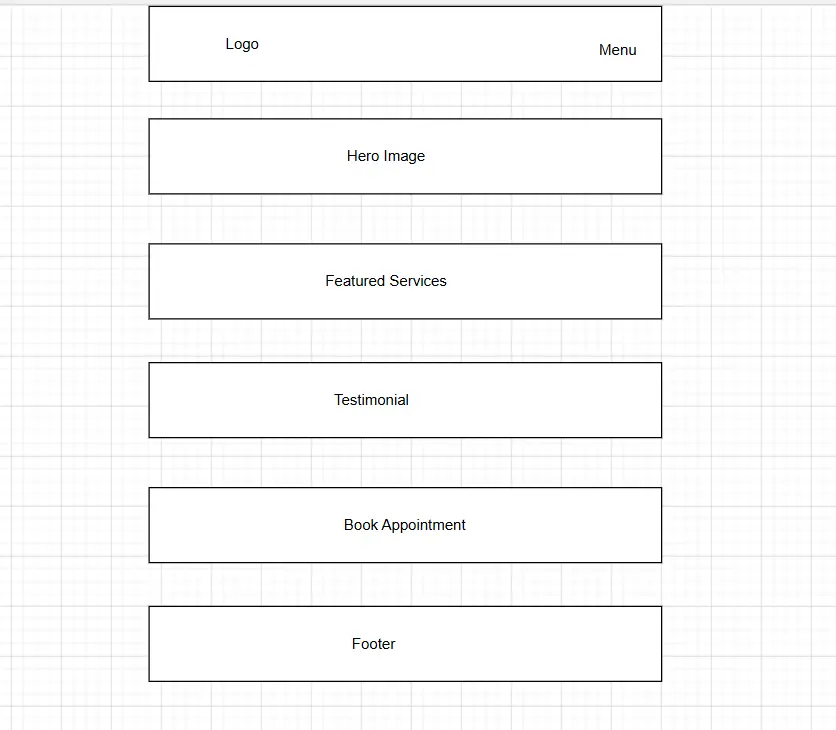
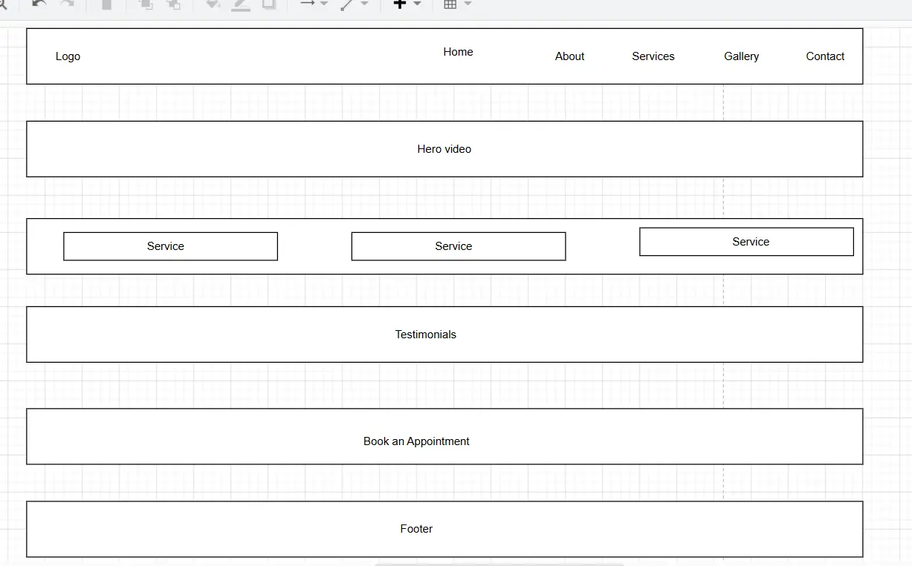

Home
The home page welcomes visitors with a hero section, featured services, testimonials, and a button that encourages visitors to book an appointment.
Website Planning Document
Billy Aura Wellness Studio
I chose the name Billy Aura Wellness Studio because I wanted a name that represents beauty, wellness, and relaxation. My goal is to create a calm and welcoming place where clients can enjoy professional beauty treatments and leave feeling refreshed and confident.
Optional domain: billyaurawellness.com
Billy Aura Wellness Studio is a website for my beauty and wellness business. The website will introduce visitors to the services I provide, including massage therapy, facials, nail care, waxing, and eyelash extensions.
Visitors will be able to learn about me, view my previous work, read about each service, and contact me to book an appointment. The website is designed to be modern, easy to use, and fully responsive on desktop and mobile devices.
The home page welcomes visitors with a hero section, featured services, testimonials, and a button that encourages visitors to book an appointment.
This page shares my story, professional experience, qualifications, and the mission of Billy Aura Wellness Studio.
Visitors can learn about massage therapy, facials, nail care, waxing, and eyelash extension services, including descriptions and prices.
The gallery displays photographs of my work. Visitors can filter images by category such as massage, facials, nails, waxing, and lashes.
Visitors can find my contact information, business hours, studio location, and use a contact form to request an appointment.
This page lists all the resources used in the project, including images, icons, fonts, videos, and other external references.
I chose a warm neutral colour palette because it creates a calm, elegant, and relaxing atmosphere that reflects the feeling of a modern beauty and wellness studio.
| Color | Value | Purpose |
|---|---|---|
| Background | OKLCH(0.985 0.008 80) | Main page background |
| Foreground | OKLCH(0.24 0.02 40) | Headings and body text |
| Primary | OKLCH(0.52 0.09 40) | Navigation, buttons, and important elements |
| Secondary | OKLCH(0.94 0.02 75) | Cards and section backgrounds |
| Accent | OKLCH(0.78 0.08 55) | Links, hover effects, and highlights |
| Muted | OKLCH(0.94 0.015 80) | Subtle backgrounds and supporting elements |
| Border | OKLCH(0.88 0.015 70) | Borders, dividers, and outlines |
I chose a warm neutral colour palette because it creates a calm, elegant, and relaxing atmosphere that reflects the feeling of a modern beauty and wellness studio. These colours will be used consistently throughout the website to create a welcoming and professional experience.
| Color | HEX Value | Purpose |
|---|---|---|
| Background | #FCFAF5 | Main page background |
| Foreground | #3B312C | Headings and body text |
| Primary | #8B5E4A | Navigation, buttons, headings, and footer |
| Secondary | #EFE7D8 | Cards and section backgrounds |
| Accent | #D9B37A | Buttons, links, hover effects, and highlights |
| Muted | #F3EEE4 | Subtle backgrounds and supporting elements |
| Border | #D8CFC1 | Borders, dividers, and outlines |

